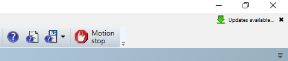
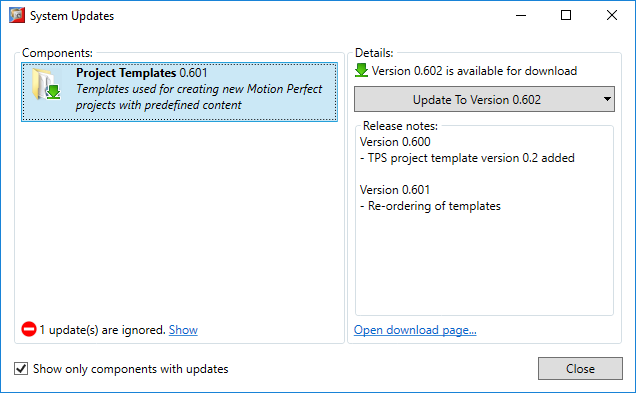
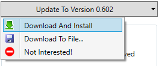
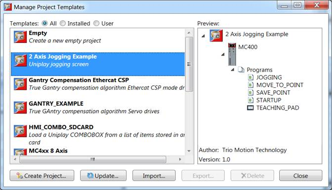
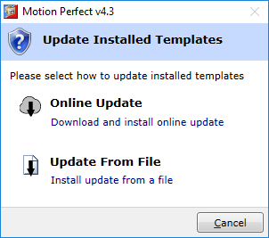

Motion Perfect has built-in support for updating the project templates so that the user can have access the latest available templates.
Motion Perfect will automatically check for updates to installed templates at start-up and display a notification at the top right corner of the application main window, when updates are available:

When the notification is clicked it will display the updates window providing information about available updates:

The default action is to update to the latest version available. However, other options are available when pressing the right-end arrow or right-clicking on the update button.

|
Action |
Description |
|
Download and Install |
The default action. Downloads and installs the latest version of templates automatically. |
|
Download to File |
Allows the update to be downloaded to a user specified file location so it can later be manually applied. See Updating Installed Templates Manually |
|
Not Interested |
Motion Perfect will not display notification for this update version, until a newer version is available for download. |
Templates can be updated manually if the update file has been previously downloaded from the System Updates window or from the download page, or obtained by other means.
To manually update templates, open the Project Template Manager window (“Project” → ”Templates” → ”Project Templates…” from Motion Perfect’s main menu) and click on the “Update” button.
 This will display a dialog where the update method can be selected – either online update, as described in the previous section or manual update from a file.

First option will perform quick online check for available updates for download and if there are any new updates it will ask if they should be downloaded and installed automatically.
Second option allows for selecting an update file, that has been previously downloaded.